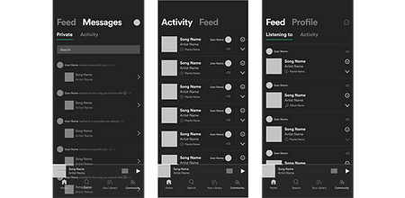
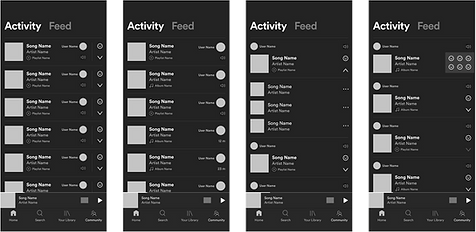
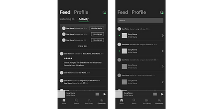
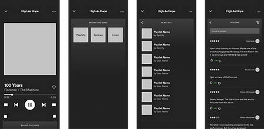

The Children's Art Carnival Website
Art Direction ~ UI/UX ~ Illustration ~ Motion Team: Tiffany Cruz, Shuang Luna Wu, Aman Gebre
Website design for The Children’s Art Carnival, a Harlem-based not-for-profit committed to providing creative experiences, opportunities, and resources to support the development and growth of participants from early ages through adulthood residing in Hamilton Heights and throughout New York City. The website was branded to capture the welcoming and creative spirit of the CAC and appeal to a target audience ranging from children to adult artists, while emphasizing the values of the organization. Design direction based on the brief and further research was pitched to the client, and the final product was created on Wix Editor with the assistance of a team of designers.
Introduction of New Features, Sketching & Prototyping
Spotify example
Trying out different ways of integrating new features to the Spotify mobile app.
Second Spotify example
Bringing friends’ listening activity to the mobile app, and adding opportunities of interactions.
Third Spotify example
Access to more friend activity. Notifications and messages from friends.
fourth Spotify example
Access to more information about songs and user reviews from the player.